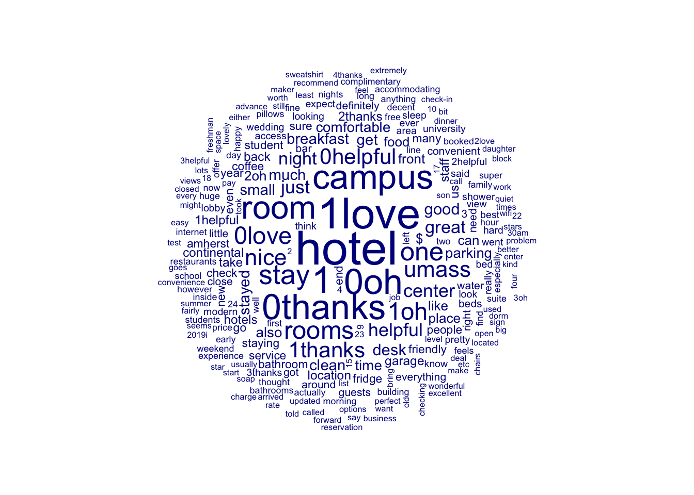
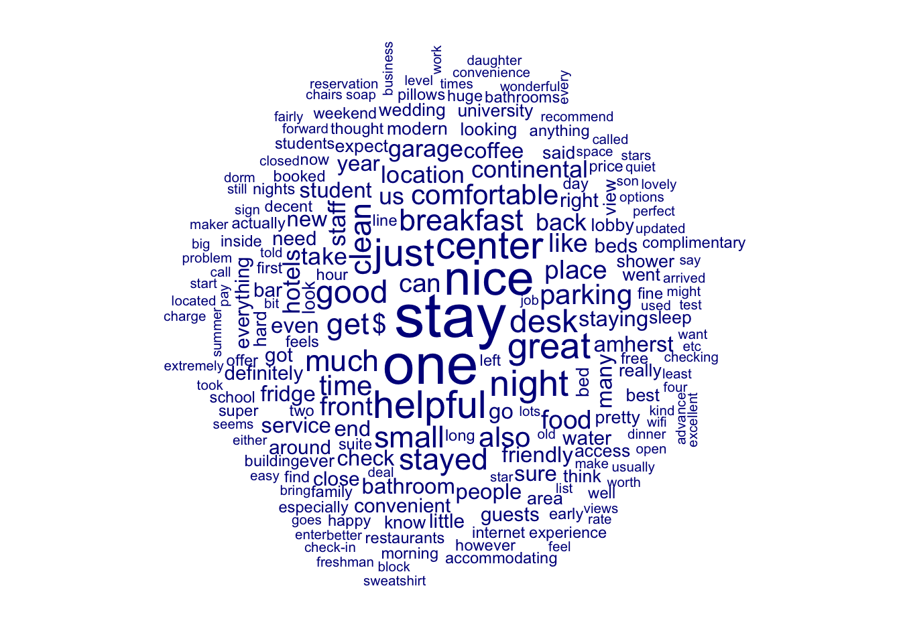

This tutorial walks you through the process of using the package rvest to scrape websites using R. rvest (sounds like “harvest”, get it?) is the workhorse package for text scraping in R and contains all of the functionality for basic scraping applications. We’ll start by loading the package and tidyverse more generally so that we can use many of the tidyverse functions later on.
── Attaching core tidyverse packages ──────────────────────── tidyverse 2.0.0 ──
✔ dplyr 1.1.4 ✔ readr 2.1.5
✔ forcats 1.0.0 ✔ stringr 1.5.1
✔ ggplot2 3.5.1 ✔ tibble 3.2.1
✔ lubridate 1.9.3 ✔ tidyr 1.3.1
✔ purrr 1.0.2
── Conflicts ────────────────────────────────────────── tidyverse_conflicts() ──
✖ dplyr::filter() masks stats::filter()
✖ readr::guess_encoding() masks rvest::guess_encoding()
✖ dplyr::lag() masks stats::lag()
ℹ Use the conflicted package (<http://conflicted.r-lib.org/>) to force all conflicts to become errors
Nicely Formatted Data
Let’s start with a simple example; we’ll use the work from the Stanford Data Challenge Lab prepared by Sara Altman and Bill Behrman. Specifically, let’s say you are interested in the study of famines and come across this website. Wonderful! But how can we get this into a format for analysis? Time to waste a lot of hours on manually entering the data or maybe we have some spare funds to hire an undergrad…
Fortunately, that’s not true. With rvest this is arbitrarily easy. First, we can tell R the webpage we are looking at.
# identify the urlurl <-"https://ourworldindata.org/famines#the-our-world-in-data-dataset-of-famines"
Of course, we can’t just read that webpage in because webpages are filled with all variety of — from our perspective — junk.
# what happens when we just read that in; it's a full webpageread_html(url)
Yeah, that’s not helpful. Instead, we need to identify just the table. This is the hardest part, but it’s not really too difficult. If you are familiar with HTML / CSS, then you might be able to just inspect the HTML to identify the correct selector. If you are in a Chrome browser, for instance, you can right click then select “Inspect”.
If you are less familiar, you can use SelectorGadget, a Chrome add-on that lets you — for whatever webpage you are visiting — “select” the portion of a page you are interested in scraping. SelectorGadget will then highlight whatever the Selector (in the bar at the bottom) would return. Once you’ve identified the Selector that works for the element of interest to you, you can add that to our code and you are off and running.
Note that, especially if you aren’t familiar, this is going to take some time to get used to and require some patience and practice. Take a moment now to install the SelectorGadget Chrome extension, then play around with SelectorGadget on the website until you can correctly identify “table”, the CSS selector that will let us pull the table.
# use SelectorGadget to find the infocss_selector <-"table"
Once we have the correct selector, we still need to (1) read the full html, (2) select out the portion that we are interested in, and (3) start formatting. That third step is really particularly easy when what we are pulling is already in tabular format. So, for example, here’s how we could read our table of data on famines into R.
# pull the tableurl %>%read_html() %>%html_node(css = css_selector) %>%html_table()
# A tibble: 77 × 6
Year Country Excess Mortality midpoin…¹ Excess Mortality low…²
<chr> <chr> <chr> <chr>
1 1846–52 Ireland 1,000,000 1,000,000
2 1860-1 India 2,000,000 2,000,000
3 1863-67 Cape Verde 30,000 30,000
4 1866-7 India 961,043 961,043
5 1868 Finland 100,000 100,000
6 1868-70 India 1,500,000 1,500,000
7 1870–1871 Persia (now Iran) 1,000,000 500,000
8 1876–79 Brazil 750,000 500,000
9 1876–79 India 7,176,346 6,135,000
10 1877–79 China 11,000,000 9,000,000
# ℹ 67 more rows
# ℹ abbreviated names: ¹`Excess Mortality midpoint`, ²`Excess Mortality lower`
# ℹ 2 more variables: `Excess Mortality upper` <chr>, Source <chr>
And if we wanted to save that, we’d just assign the prior chunk of code to an list item object. Then, we’d be ready for analysis.
Less Nicely Formatted Data
Of course, more likely than not we will be encountering data that aren’t so nice and tidy. This is particularly true for web scraping when the item of interest is text data, which rarely appear in tables like the one above.
Let’s try out an example. We’ll look at yelp reviews for everyone’s favorite brutalist building: Hotel UMass.
# start by defining the url we wanturl <-"https://www.umass.edu/public-policy/dacss-core-faculty"# now define the field we wantcss_selector <-"td"faculty <- url %>%read_html() %>%html_nodes(css = css_selector) %>%html_text()faculty
[1] "Soo Young BaeAssociate Professor of Communication"
[2] "Forrest BowlickSenior Lecturer of Geosciences"
[3] "David CortProfessor of Sociology"
[4] "Jane FountainDistinguished Professor of Public Policy"
[5] "Ina GanguliProfessor of Economics"
[6] "Krista GileProfessor of Math and Statistics"
[7] "Justin GrossAssociate Professor of Political Science"
[8] "Tyler HoranLecturer of Data Analytics and Computational Social Science"
[9] "Jason KamilarProfessor of Anthropology"
[10] "Scott MonroeAssociate Professor of Education"
[11] "Brendan O’ConnorAssociate Professor of Computer Science"
[12] "Anthony PaikProfessor of Sociology"
[13] "Rosemary PangLecturer of Data Analytics and Computational Social Science"
[14] "Crystal PaulSenior Lecturer of Data Analytics and Computational Social Science"
[15] "Henry RenskiProfessor of Landscape Architecture and Regional Planning"
[16] "Doug RiceAssociate Professor of Political Science & Legal Studies"
[17] "Meredith RolfeAssociate Professor of Political Science"
[18] "Kelsey ShoubAssistant Professor of Public Policy"
[19] "Eunkyung SongLecturer of Data Analytics and Computational Social Science"
[20] "Carey StapletonLecturer of Data Analytics and Computational Social Science"
[21] "Alexander TheodoridisAssociate Professor of Political Science"
[22] "Viviana WuAssistant Professor of Public Policy"
[23] "Weiai (Wayne) XuAssociate Professor of Communication"
[24] "Omer YalcinLecturer of Data Analytics and Computational Social Science"
[25] "Kevin YoungProfessor of Economics"
[26] "Erico YuLecturer of Data Analytics and Computational Social Science"
[27] "Ethan ZuckermanAssociate Professor of Public Policy, Communication, and Information"
# start by defining the url we wanturl <-"https://www.yelp.com/biz/hotel-umass-amherst?osq=hotel+umass"# now define the field we wantcss_selector1 <-"li.y-css-mu4kr5"css_selector2<-"#reviews"css_selector<-"#reviews"reviews <- url %>%read_html() %>%html_nodes(css = css_selector1) %>%html_text()reviews
[1] "Tara H.Newport, RI7096Nov 25, 2018I booked this place after I decided we should stay overnight after Thanksgiving dinner with family in the area. I am UMass alumni and was feeling nostalgic so when I started looking for rooms and came across the hotel (which I had forgotten was even there) I got excited about the prospect of being on the campus again.The good: it really is a decent hotel. Nice and modern and updated and comfortable. They have water bottles in the room that can be used to get spring water downstairs for the duration of your stay. I thought that this was a very nice touch since when I need a drink at night I usually end up using a plastic cup to get water out of the tap. They also have a limited continental breakfast that does the job for some. Would have been fine for me but left something to be desired for my kids. The gentleman checking us in at the front desk was friendly and helpful. We were only staying for one night during Thanksgiving so the campus was pretty much deserted but I would definitely come back and stay for longer. The location in the center of campus in the student center with access to tons of food options and amenities is awesome. Perfect spot from which to access and explore the entire campus.The not so good: Hardly anything. You only get one parking space in the garage. Not usually an issue but because my mother was staying with us she had to pay the $20 parking fee. Not a huge deal but I like open access to parking. The bathroom was so teeny you can barely even turn around in there! It does have a nice large stand-up shower which again was fine for me but my 8-year-old son lamented that he couldn't take a bath which he really wanted to do. I would definitely recommend staying here if your main focus is seeing the campus. You cannot beat the location and it's a pretty decent place. Don't let the fact that it's a college hotel scare you!Helpful 1Helpful 2Thanks 0Thanks 1Love this 1Love this 2Oh no 0Oh no 1"
[2] "Joe M.Dartmouth, MA0245Sep 18, 20211 photoWhat a disaster!! What kind of hotel has only one clerk on during a rush period? After a long day and Football game we went to check in an there was a line of at least 20 people waiting to check in. Ya think they might actually have some staff on to handle the anticipated crowd trying to check inA long line of people being forced to wait for over an hour to simply check in!Helpful 1Helpful 2Thanks 0Thanks 1Love this 1Love this 2Oh no 0Oh no 1"
[3] "Greg H.Wethersfield, CT04Jul 10, 2022They claim to have no rooms available during the summer but I have a hard time believing that.Helpful 1Helpful 2Thanks 0Thanks 1Love this 0Love this 1Oh no 0Oh no 1"
[4] "Mike D.Elite 24Ridgefield, CT34248364May 9, 2019The great: location, location, location,they've got it and you want it. So they make you pay for it. Also great covered garage parking, restaurants, pub, and nice managers reception at night and all food is great.The good, decent room, comfortable beds, in room keurig The bad, noisy, especially if near elevator, small bathroom. Pillows aren't very good, we bring ours.not very many outlets and no usb chargingThe ugly, no mini fridge for your stuff like a white wine, weird. No safe. 3 night minimum at peak times like graduation so $900 for a stay 3x300=900SummaryWe keep coming back, so we think it's worth itHelpful 1Helpful 2Thanks 0Thanks 1Love this 0Love this 1Oh no 0Oh no 1"
[5] "Kim S.Coos, NH617Sep 18, 2021We book our stay over a month in advance. We were traveling to see our son and take in a show. Check in time was 3:00pm. We arrived at 3:15. There were several people in the lobby who all looked unhappy. The was a sign on the front desk that said due to staffing shortages the desk was closed and would open at 6. We left to take our son to dinner and a show. We call all the numbers for the hotel to no avail. We then called Umass police. They said many people had called. They did not know why it was not ope either. Now we are driving to Framingham to the closest hotel with availability. Do not stay there. Ruined a nice weekend.Helpful 3Helpful 4Thanks 0Thanks 1Love this 1Love this 2Oh no 0Oh no 1"
[6] "Howie B.Elite 24Needham, MA45135568Jun 23, 2016It was wonderful to be back at my Alma Mater! Stayed two nights in connection with my son's New Student Orientation. It was a terrific stay and it is wonderfully convenient to be situated right on campus. Having attended in the '80s, the hotel always felt aesthetically cold - both inside and out (lots of poured concrete will do that. Housed in the university's Campus Center, one of the New Student Program tour guides referred to the hotel's exterior as looking like a \"waffle iron.\" I had never heard that before, yet it is indeed true.) However, as new buildings continue to rise up around it, the Campus Center building seems to have become more charming over the years.Inside the hotel they have professionalized their operation and \"warmed-up\" the public spaces, redecorated their rooms and offer amenities like a substantial continental breakfast and free wifi (there was no wifi back in the '80s :-) There are amazing food options in the new Blue Wall on the Campus Center concourse level. Previously an aged bar on campus, this has been totally redesigned as a state-of-the-art \"food court\" with eye-popping selections (a bakery, gelateria, Mexican and Asian stations, sushi, deli, pizza, salad bar, and much more (UMASS's food service is among the most-awarded for colleges and universities in the US!)We stayed in a \"pond view\" room which offered a stunning (at least it was to me) view of the center of campus. The room was very clean, updated and well-appointed. The bed was among the most comfortable I've ever slept in. The bathroom, which was on the small side making it difficult to close the door once inside, was updated and was serviceable. One small gripe is that they don't provide bar soap in the shower, instead providing a tiny tube of body wash. I actually ran into the Hotel Manager, Rachelle Allen, during my stay (she could not have been more personable and lovely) and noted this to her. She indicated that this is done in an effort to economize and avoid waste. However, she said she would be happy to send up bar soap if requested.This was a wonderful and very pleasant stay and it was great to be back on campus. I look forward to many more stays over the next four years!Helpful 2Helpful 3Thanks 0Thanks 1Love this 0Love this 1Oh no 0Oh no 1"
[7] "Kat Y.Elite 24Newport, RI37206277Mar 9, 2019Clean, easy, convenient. Bring your own conditioner, they do not produce any. This was a major problem for my textured hair. This is the best place to say if you have business at the Flagship UMass campus.Helpful 3Helpful 4Thanks 0Thanks 1Love this 1Love this 2Oh no 0Oh no 1"
[8] "Chris K.Elite 24Bloomfield Township, MI118851149Feb 17, 2019I admit I wasn't sure what to expect on arrival, viewing the exterior - which I later learned was a brutalist architectural style. Staff were very friendly on check-in and quickly got me settled in my quiet room with good views of the surrounding campus. The two-queen room was spacious and very clean. My only cons would be the wireless internet (good speed, reliable) seemed to kick you off a few times per day and force you to re-enter the password each time, and it was very quiet - nice to have at least a fan on the AC unit that can create a little white noise for sleeping at night. Breakfast buffet in the morning, cookies on the check-in counter, lots of nice touches. Was overall very happy here, and would happily stay again!Helpful 1Helpful 2Thanks 0Thanks 1Love this 0Love this 1Oh no 0Oh no 1"
[9] "Roy A.Elite 24Alexandria, VA3574525829Apr 3, 2018The five stars is based on basic services and the desire to be located in the center of UMass Amherst while doing a tour. Being on campus is the bonus, the room was small but very clean, room service was prompt and no issues. The price is very reasonable and I highly recommend the hotel. It has no high end feature so if your looking for luxuries you may need to look elsewhere. Unlimited access to parking in the connected garage and multiple dining options also a plus.Helpful 1Helpful 2Thanks 0Thanks 1Love this 1Love this 2Oh no 0Oh no 1"
[10] "Kevin J.Philadelphia, PA195642126Mar 24, 2011I much prefer staying here than the newer-built hotels up in the town of Amherst. The central campus location of UMass Hotel Campus Center is not only the most convenient, it's actually picturesque. They offer a view of the little pond and the trees in late autumn are particularly breathtaking - the entrance plaza stairs could even be called artistic. UMass offers a reduced rate specific for students and their guests. They offer the most convenient location for walking to campus events at the Mullins Center and other facilities. They offer indoor swimming pool access. Would stay here again in a heartbeat. Although simple accommodations, it still makes for a very comfortable setting. Qualifies for my Best of the A10 list... no other hotel in Amherst or Springfield comes close to providing the same convenience or at-home feeling.Helpful 2Helpful 3Thanks 0Thanks 1Love this 0Love this 1Oh no 0Oh no 1"
[11] ""
There are 10 reviews on each page, but we find an extra empty review [11]. So we want to filter out empty reviews.
reviews <- reviews[reviews !=""]reviews
[1] "Tara H.Newport, RI7096Nov 25, 2018I booked this place after I decided we should stay overnight after Thanksgiving dinner with family in the area. I am UMass alumni and was feeling nostalgic so when I started looking for rooms and came across the hotel (which I had forgotten was even there) I got excited about the prospect of being on the campus again.The good: it really is a decent hotel. Nice and modern and updated and comfortable. They have water bottles in the room that can be used to get spring water downstairs for the duration of your stay. I thought that this was a very nice touch since when I need a drink at night I usually end up using a plastic cup to get water out of the tap. They also have a limited continental breakfast that does the job for some. Would have been fine for me but left something to be desired for my kids. The gentleman checking us in at the front desk was friendly and helpful. We were only staying for one night during Thanksgiving so the campus was pretty much deserted but I would definitely come back and stay for longer. The location in the center of campus in the student center with access to tons of food options and amenities is awesome. Perfect spot from which to access and explore the entire campus.The not so good: Hardly anything. You only get one parking space in the garage. Not usually an issue but because my mother was staying with us she had to pay the $20 parking fee. Not a huge deal but I like open access to parking. The bathroom was so teeny you can barely even turn around in there! It does have a nice large stand-up shower which again was fine for me but my 8-year-old son lamented that he couldn't take a bath which he really wanted to do. I would definitely recommend staying here if your main focus is seeing the campus. You cannot beat the location and it's a pretty decent place. Don't let the fact that it's a college hotel scare you!Helpful 1Helpful 2Thanks 0Thanks 1Love this 1Love this 2Oh no 0Oh no 1"
[2] "Joe M.Dartmouth, MA0245Sep 18, 20211 photoWhat a disaster!! What kind of hotel has only one clerk on during a rush period? After a long day and Football game we went to check in an there was a line of at least 20 people waiting to check in. Ya think they might actually have some staff on to handle the anticipated crowd trying to check inA long line of people being forced to wait for over an hour to simply check in!Helpful 1Helpful 2Thanks 0Thanks 1Love this 1Love this 2Oh no 0Oh no 1"
[3] "Greg H.Wethersfield, CT04Jul 10, 2022They claim to have no rooms available during the summer but I have a hard time believing that.Helpful 1Helpful 2Thanks 0Thanks 1Love this 0Love this 1Oh no 0Oh no 1"
[4] "Mike D.Elite 24Ridgefield, CT34248364May 9, 2019The great: location, location, location,they've got it and you want it. So they make you pay for it. Also great covered garage parking, restaurants, pub, and nice managers reception at night and all food is great.The good, decent room, comfortable beds, in room keurig The bad, noisy, especially if near elevator, small bathroom. Pillows aren't very good, we bring ours.not very many outlets and no usb chargingThe ugly, no mini fridge for your stuff like a white wine, weird. No safe. 3 night minimum at peak times like graduation so $900 for a stay 3x300=900SummaryWe keep coming back, so we think it's worth itHelpful 1Helpful 2Thanks 0Thanks 1Love this 0Love this 1Oh no 0Oh no 1"
[5] "Kim S.Coos, NH617Sep 18, 2021We book our stay over a month in advance. We were traveling to see our son and take in a show. Check in time was 3:00pm. We arrived at 3:15. There were several people in the lobby who all looked unhappy. The was a sign on the front desk that said due to staffing shortages the desk was closed and would open at 6. We left to take our son to dinner and a show. We call all the numbers for the hotel to no avail. We then called Umass police. They said many people had called. They did not know why it was not ope either. Now we are driving to Framingham to the closest hotel with availability. Do not stay there. Ruined a nice weekend.Helpful 3Helpful 4Thanks 0Thanks 1Love this 1Love this 2Oh no 0Oh no 1"
[6] "Howie B.Elite 24Needham, MA45135568Jun 23, 2016It was wonderful to be back at my Alma Mater! Stayed two nights in connection with my son's New Student Orientation. It was a terrific stay and it is wonderfully convenient to be situated right on campus. Having attended in the '80s, the hotel always felt aesthetically cold - both inside and out (lots of poured concrete will do that. Housed in the university's Campus Center, one of the New Student Program tour guides referred to the hotel's exterior as looking like a \"waffle iron.\" I had never heard that before, yet it is indeed true.) However, as new buildings continue to rise up around it, the Campus Center building seems to have become more charming over the years.Inside the hotel they have professionalized their operation and \"warmed-up\" the public spaces, redecorated their rooms and offer amenities like a substantial continental breakfast and free wifi (there was no wifi back in the '80s :-) There are amazing food options in the new Blue Wall on the Campus Center concourse level. Previously an aged bar on campus, this has been totally redesigned as a state-of-the-art \"food court\" with eye-popping selections (a bakery, gelateria, Mexican and Asian stations, sushi, deli, pizza, salad bar, and much more (UMASS's food service is among the most-awarded for colleges and universities in the US!)We stayed in a \"pond view\" room which offered a stunning (at least it was to me) view of the center of campus. The room was very clean, updated and well-appointed. The bed was among the most comfortable I've ever slept in. The bathroom, which was on the small side making it difficult to close the door once inside, was updated and was serviceable. One small gripe is that they don't provide bar soap in the shower, instead providing a tiny tube of body wash. I actually ran into the Hotel Manager, Rachelle Allen, during my stay (she could not have been more personable and lovely) and noted this to her. She indicated that this is done in an effort to economize and avoid waste. However, she said she would be happy to send up bar soap if requested.This was a wonderful and very pleasant stay and it was great to be back on campus. I look forward to many more stays over the next four years!Helpful 2Helpful 3Thanks 0Thanks 1Love this 0Love this 1Oh no 0Oh no 1"
[7] "Kat Y.Elite 24Newport, RI37206277Mar 9, 2019Clean, easy, convenient. Bring your own conditioner, they do not produce any. This was a major problem for my textured hair. This is the best place to say if you have business at the Flagship UMass campus.Helpful 3Helpful 4Thanks 0Thanks 1Love this 1Love this 2Oh no 0Oh no 1"
[8] "Chris K.Elite 24Bloomfield Township, MI118851149Feb 17, 2019I admit I wasn't sure what to expect on arrival, viewing the exterior - which I later learned was a brutalist architectural style. Staff were very friendly on check-in and quickly got me settled in my quiet room with good views of the surrounding campus. The two-queen room was spacious and very clean. My only cons would be the wireless internet (good speed, reliable) seemed to kick you off a few times per day and force you to re-enter the password each time, and it was very quiet - nice to have at least a fan on the AC unit that can create a little white noise for sleeping at night. Breakfast buffet in the morning, cookies on the check-in counter, lots of nice touches. Was overall very happy here, and would happily stay again!Helpful 1Helpful 2Thanks 0Thanks 1Love this 0Love this 1Oh no 0Oh no 1"
[9] "Roy A.Elite 24Alexandria, VA3574525829Apr 3, 2018The five stars is based on basic services and the desire to be located in the center of UMass Amherst while doing a tour. Being on campus is the bonus, the room was small but very clean, room service was prompt and no issues. The price is very reasonable and I highly recommend the hotel. It has no high end feature so if your looking for luxuries you may need to look elsewhere. Unlimited access to parking in the connected garage and multiple dining options also a plus.Helpful 1Helpful 2Thanks 0Thanks 1Love this 1Love this 2Oh no 0Oh no 1"
[10] "Kevin J.Philadelphia, PA195642126Mar 24, 2011I much prefer staying here than the newer-built hotels up in the town of Amherst. The central campus location of UMass Hotel Campus Center is not only the most convenient, it's actually picturesque. They offer a view of the little pond and the trees in late autumn are particularly breathtaking - the entrance plaza stairs could even be called artistic. UMass offers a reduced rate specific for students and their guests. They offer the most convenient location for walking to campus events at the Mullins Center and other facilities. They offer indoor swimming pool access. Would stay here again in a heartbeat. Although simple accommodations, it still makes for a very comfortable setting. Qualifies for my Best of the A10 list... no other hotel in Amherst or Springfield comes close to providing the same convenience or at-home feeling.Helpful 2Helpful 3Thanks 0Thanks 1Love this 0Love this 1Oh no 0Oh no 1"
That’s great, but as you can see it only pulls the first 10 reviews. We’d ideally like to have them all. To do so, we need to iterate through the pages. This takes some understanding of how Yelp sets up their website. Here’s the URL we were using
If you head to that webpage, you’ll notice that only the first set of reviews is actually present. How might we get the second set? The easiest way would be if we could identify some standard language that Yelp is using that we can then leverage to “loop” through each page (that is, run the same operation as above for each page). To see how Yelp lays everything out, click through to the second page of reviews. Here’s the URL for that page, and a comparison of the two URLs.
new_url <-"https://www.yelp.com/biz/hotel-umass-amherst?osq=hotel+umass&start=10"# print these next to each otherurl
Aha! That shows us how they are indexing the pages, with a little statement :“&start=10”. The indexing here is kind of weird but if you click on the next set, you’ll see that 10 jumps up to 20. So they are counting by 10 and creating a new page each time. We can use that to set up a loop. Ostensibly, you could identify the total number of pages is 4 pages. The first page is — as we just saw — unnumbered, and then each thereafter is indexed by 10. Because the first is unnumbered, we’ll subtract one from our number of pages to loop through.
# create the indicespageNumber <-10*c(1:3)# get an idea of what we just createdhead(pageNumber)
[1] 10 20 30
length(pageNumber)
[1] 3
# set up a new vector to store the urlsurls <- url# loop through the page numbers and create the new urlsfor (i in1:length(pageNumber)){ urls <-c(urls, paste("https://www.yelp.com/biz/hotel-umass-amherst?osq=hotel+umass&start=",pageNumber[i], sep =""))}# look at the first fewhead(urls)
Now that we have all of the urls, we can loop through each pulling the reviews from each page. To do so, we need to create a new vector that will store all of the reviews; otherwise, we’ll just be overwriting our review object in each loop.
Note that this will take a couple of minutes; we’re iterating through 4 pages after all.
# set up an empty vector to store reviewsreviews <-c()# loop through urlsfor (i in1:length(urls)){# extract reviews for this url tmpReviews <- urls[i] %>%read_html() %>%html_nodes(css = css_selector1) %>%html_text()# add them to the set of reviews reviews <-c(reviews,tmpReviews)}#filter out empty reviewsreviews <- reviews[reviews !=""]# look at the 12th reviewsreviews[15]
[1] "Barbara A.Elite 24East Watertown, MA605645277Apr 17, 2013This brings back memories ... they last time I was here, I was a senior in college and I just lost my housing and had no where to go. Luckily, every year, my mom would make a reservation here for herself so she could rest up before heading home after dropping me off. Nice improvements! The rooms are very nice if not still on the small side, but I will take clean over size any day. If you have to be on campus early, I suggest staying here so you can just roll out and go. We had gone to dinner before we checked in and brought back leftovers but ... there was no fridge. We looked everywhere because we were so sure there would be one but no. They have complimentary water in the room and they have continental breakfast which is decent.The -1 star for check in ... we got there about 10 pm and we waited but no one was at the desk (and a line was forming behind me). I finally ended up calling the hotel and saying could someone take care of the people at the front desk and they were right on it. Other than that, a good hotel experience.Helpful 1Helpful 2Thanks 0Thanks 1Love this 1Love this 2Oh no 0Oh no 1"
There’s a few things we’d want to do from here. We could expand the extraction to identify all sorts of other aspects of each review — the name, location, and prior reviews by a reviewer; the overall rating as well as the rating across different categories; and so on — and add those extractions to each stage of our loop. We’ll leave those steps to future analyses.
A Quick Analysis
With the text scraped from the site, we can use a bit of what we’ve done in past tutorials (and will continue to do going forward) to take a look at what folks are saying about Hotel UMass.
See https://quanteda.io for tutorials and examples.
library(quanteda.textplots)# convert to corpushotel_corpus <-corpus(reviews)# create a word cloudhotel_dfm <-tokens(hotel_corpus, remove_punct=TRUE) %>%tokens_select(pattern=stopwords("en"),selection="remove") %>%dfm()textplot_wordcloud(hotel_dfm)

It’s hard to find a pattern. Since we included the buttons “helpful”, “thanks”, etc. under the reviews, the most common words are “1love”, “0oh”. Also, since we are interested in hotel reviews, we also see common words such as “hotel”, “rooms”, “campus”, etc. Let’s see if we can remove these words.
hotel_dfm2 <-tokens(hotel_corpus,remove_punct=TRUE,remove_numbers =TRUE) %>%tokens_select(pattern=c(stopwords("en"),"hotel","rooms","room","umass","campus"),selection="remove") %>%## Regular expression that matches words that start with numbers followed by letterstokens_select(pattern ="^\\d+\\w+$", selection ="remove", valuetype ="regex") %>%dfm()textplot_wordcloud(hotel_dfm2)

Now the reviews are pretty obvious! Good job Hotel UMass!
Conclusion
Everything here worked well. But what if we have a website that doesn’t follow the same nice URL nomenclature / pattern that we found above? In that case, we’ll need to resort to RSelenium. We’ll leave that for another tutorial.